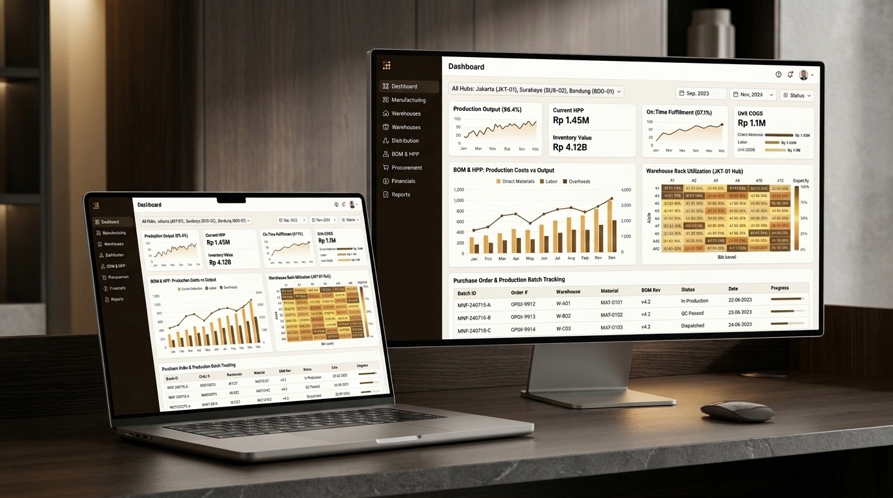

01 / Inventori & Produksi (ERP)
Sistem ERP Gudang, Pembelian, & Produksi
Dibangun untuk perusahaan yang membutuhkan keterhubungan data antara pembelian bahan baku ke supplier, pencatatan stok multi-gudang, hingga proses produksi barang jadi.
Kondisi Awal
Pencatatan stok gudang, surat pesanan (PO), dan pemakaian bahan produksi masih terpisah di Excel sehingga sering terjadi selisih stok fisik dan keterlambatan belanja bahan.
Solusi Sistem
Aplikasi web ERP dengan modul persetujuan PO, pemotongan bahan baku otomatis berdasarkan resep/komposisi produksi (BOM), serta pengingat stok minimum.
Hasil di Lapangan
Alur keluar-masuk barang terlacak jelas, stok opname jauh lebih cepat, dan Harga Pokok Produksi (HPP) terhitung otomatis setiap produksi selesai.